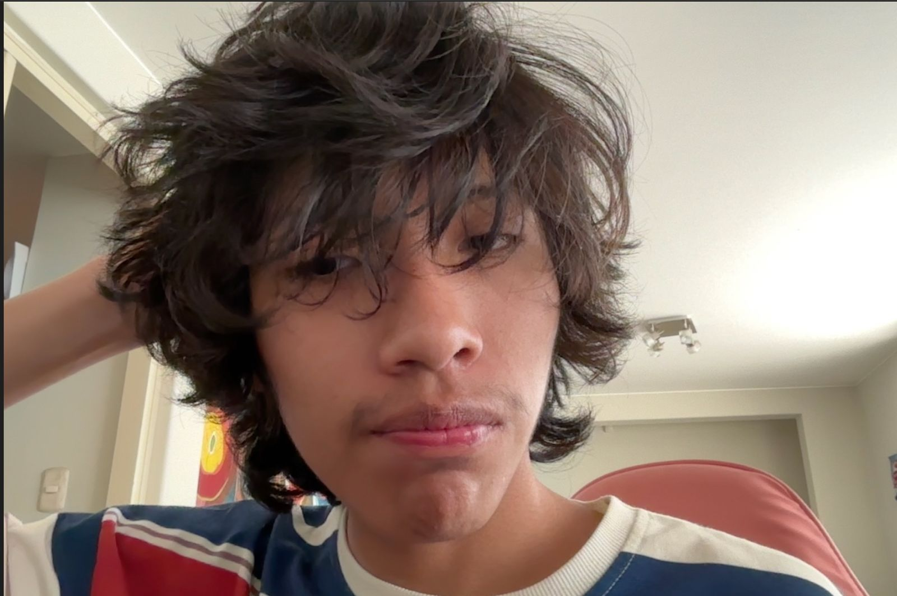

Estudiante de Ciencias de la Computación - Universidad Católica San Pablo
Soy Juan Joshept Shongw Paredes Hallasi, tengo 18 años y estudio Ciencias de la Computación en la Universidad Católica San Pablo en Arequipa, Perú. Me apasiona la tecnología y aprender cosas nuevas. Me considero una persona curiosa y responsable que disfruta del aprendizaje continuo. Busco ampliar mis conocimientos y aplicarlos para encontrar solución a diversos problemas de la actualidad y así poder crecer profesionalmente.